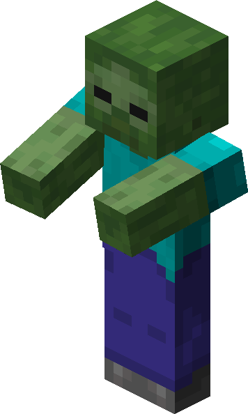

Minecraft
Minecraft es un videojuego de construcción de tipo «mundo abierto» o sandbox creado originalmente por el sueco Markus Persson (conocido comúnmente como «Notch»), y posteriormente desarrollado por Mojang Studios (actualmente parte de Microsoft). Fue lanzado el 17 de mayo de 2009, y después de numerosos cambios, su primera versión estable «1.0» fue publicada el 18 de noviembre de 2011.

20.00€
Personajes:
Steve
Steve es un personaje ficticio de la franquicia de videojuegos Minecraft. Steve carece de una historia de fondo oficial de los desarrolladores de Minecraft, ya que pretende ser un avatar de jugador personalizable en lugar de ser un personaje predefinido.

Creeper
El creeper es una criatura hostil común que se acerca sigilosamente al jugador y explota, destruyendo el entorno y dañando tanto al jugador como a otras criaturas dentro del radio de la explosión. Debido a su aspecto y peculiares características, el creeper es considerado un icono de Minecraft.
Zombie
El zombi (Zombie en inglés) es una criatura hostil común y no muerta.

Esqueleto
El esqueleto (Skeleton en inglés) es una criatura hostil común y no muerta que va equipada con un arco y flechas.